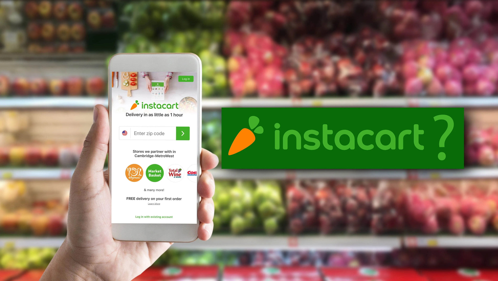

This project involves the analysis of the Kaggle Pokémon dataset, focusing on various attributes of Pokémon creatures. The dataset includes attributes such as HP, Attack, Defense, Special Attack, Special Defense, Speed, Generation, and whether the Pokémon is legendary. The aim of this project is to explore correlations and relationships among these attributes and determine their statistical significance.

Supermarket Web Application is a simple learning project designed to showcase web development skills. This basic web application allows users to view a catalog of items and place orders. The project utilizes technologies like Express, EJS, and MongoDB to demonstrate the fundamentals of building a web application with server-side and client-side interaction.
The project was designed to help drivers get an awareness of where speeding cameras are located, at least within Prince George’s County. Although navigation apps like Google Maps and Waze provide indications of cameras, those are dependent on crowdsourcing whereas the dataset we chose is provided directly by the Prince George’s County police department making it much more reliable.

In this project I analyzed the instacart dataset to answer a research question I had which is do people order different foods at different times of day? For example, do people order more junk food relative to other foods late at night?. According to the analysis and the heatmap I learned that the demand for snacks and produce is high in the late morning to early afternoon, while the demand for frozen and dairy/eggs peaks in the late afternoon to early evening.

In this project I created a simple web application that retrieves and displays the most popular YouTube video titles using the YouTube Data API. The project is implemented with Python and Flask framework, allowing users to view a list of the top videos' titles. Some of the features include the ability to fetche data from the YouTube Data API to get the most popular video titles. The ability to store the video titles in a local SQLite database for quick retrieval and Providing a button to toggle the display of the video titles, offering a user-friendly interface.
This is a simple web application built with Express and MongoDB, allowing users to process applications, review applications, select applicants based on GPA, and remove all applications. The project uses the ejs templating engine for rendering views. The application should be used for learning purposes and may require additional security measures and error handling for production use.